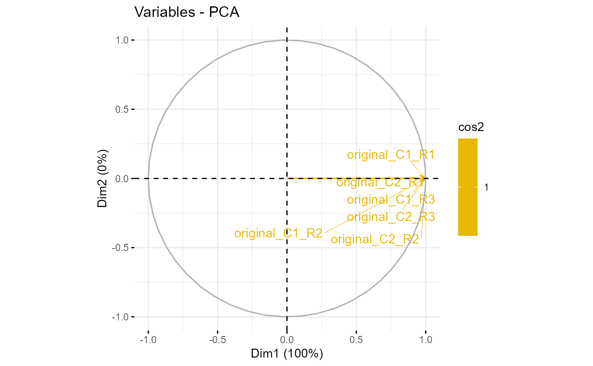

Bar plot of missing values per lines using highcharter.
Source:R/omXplore_pca.R, R/plot_pca.R
ds-pca.RdThis method plots a bar plot which represents the distribution of the number of missing values (NA) per lines (ie proteins).
wrapper_pca(): xxxplotPCA_Eigen_hc(): plots the eigen values of PCA with the highcharts libraryplotPCA_Eigen(): plots the eigen values of PCAplotPCA_Var():plotPCA_Ind():
xxx
Arguments
- id
A
character(1)which is the id of the shiny module.- obj
An instance of the class
MultiAssayExperiment.- i
xxxx
- qdata
xxx
- group
xxx
- var.scaling
xxx
- ncp
xxx
- res.pca
xxx
- chosen.axes
xxx
Examples
if (interactive()) {
data(vdata)
# Replace missing values for the example
sel <- is.na(SummarizedExperiment::assay(vdata, 1))
SummarizedExperiment::assay(vdata[[1]])[sel] <- 0
omXplore_pca(vdata, 1)
}
data(vdata)
obj <- vdata[[1]]
res.pca <- wrapper_pca(SummarizedExperiment::assay(obj), get_group(obj))
plotPCA_Eigen(res.pca)
plotPCA_Var(res.pca)

plotPCA_Eigen_hc(res.pca)
plotPCA_Ind(res.pca)
